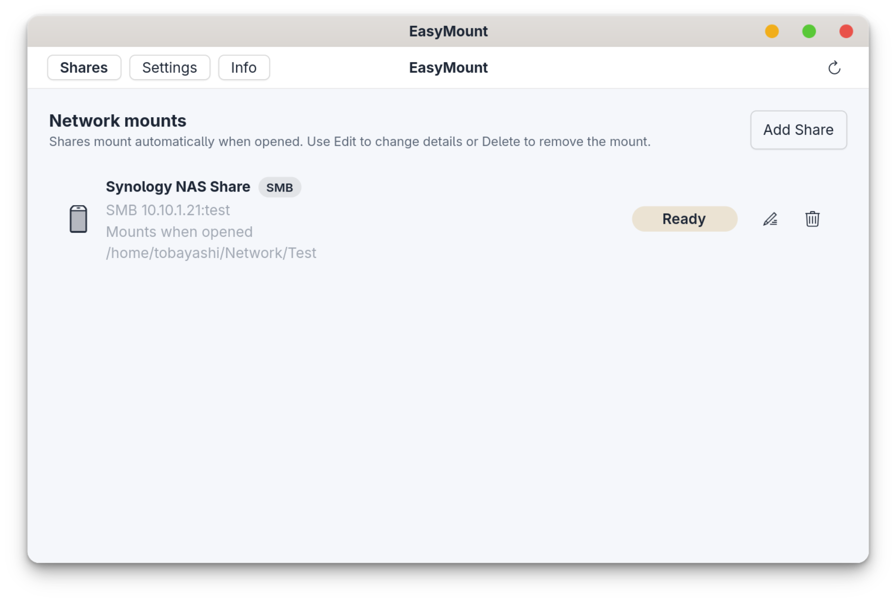
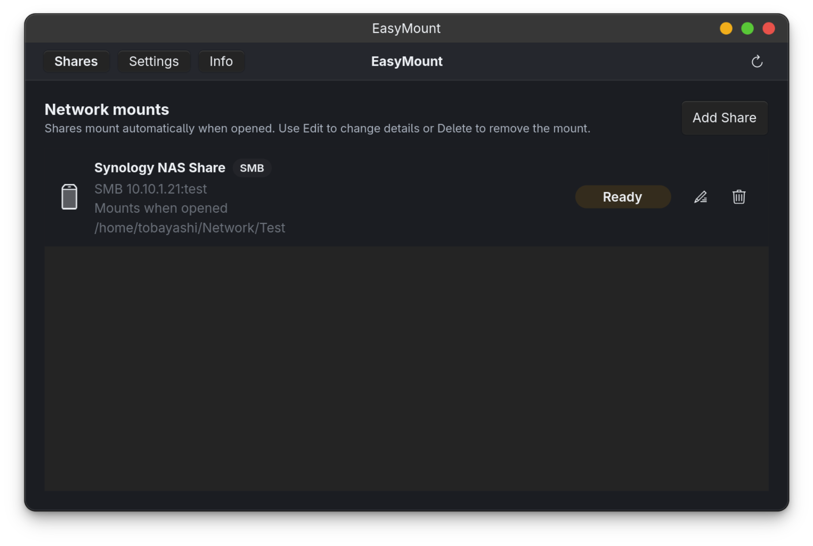
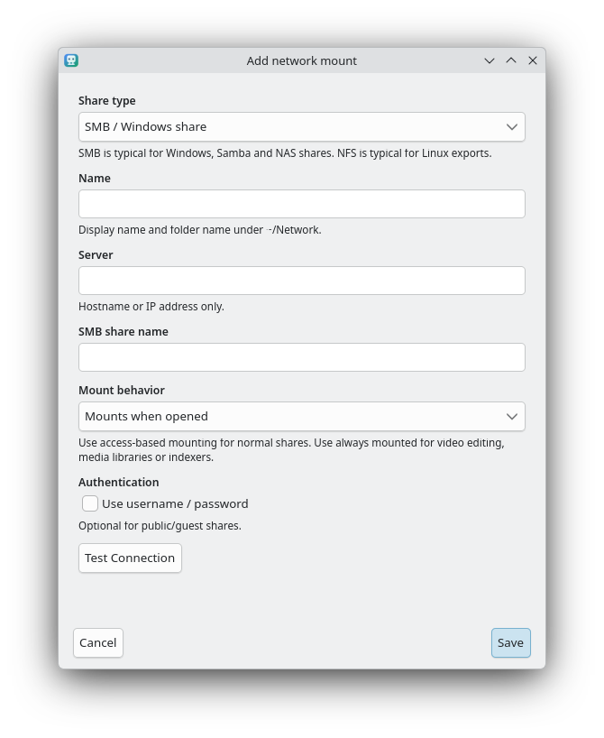
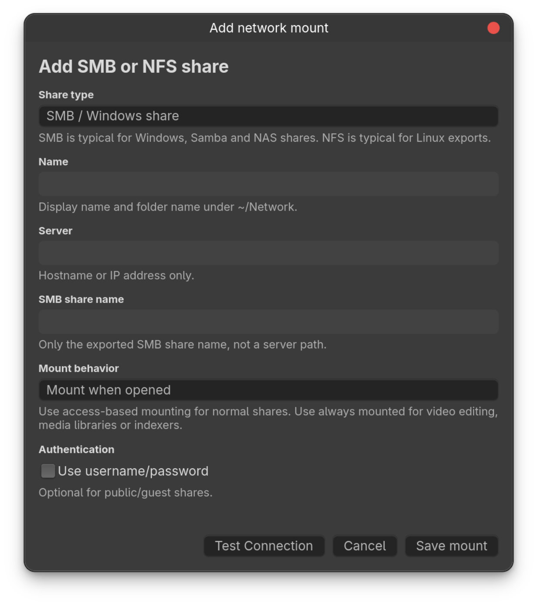
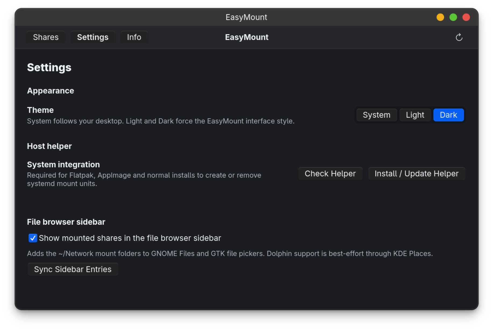

EasyMount sets up persistent SMB and NFS mounts
through systemd units — no hand-edited fstab, no copy-pasted credentials.
Profiles live in your user config, passwords stay in Secret Service.
# EasyMount writes systemd units instead of editing fstab $ systemctl status home-you-Network-NAS.automount ● home-you-Network-NAS.automount - Automount for //nas/media Loaded: loaded Active: active (waiting) Where: /home/you/Network/NAS # after login the agent prepares SMB credentials; first access mounts on demand $ ls ~/Network/NAS → mounted
A small GTK 4 app drives a Polkit-protected helper. You get a clean GUI; systemd does the mounting.
Add, edit and delete Windows/Samba shares and Linux NFS exports without touching a config file.
Mount on first access for casual browsing, or keep it always mounted for video editing and indexers.
Generates systemd .mount and .automount units. Saved SMB credentials are restored after login before authenticated triggers start.
SMB credentials go through secret-tool instead of being written into plain-text unit files.
Settings verifies the helper, systemd, SMB/NFS mount tools and secret storage before you hit problems.
Optional bookmarks for GNOME Files, GTK pickers and KDE Places point straight at your mounts.
EasyMount ships System, Light and Dark themes. Drag the handle to compare the same view in both.





Grab a build from the releases page. On first launch, open Settings → Host helper and run Install / Update Helper.
$ chmod +x EasyMount-0.1.1-x86_64.AppImage $ ./EasyMount-0.1.1-x86_64.AppImage
$ flatpak install --user EasyMount-0.1.1-x86_64.flatpak $ flatpak run org.easymount.EasyMount
The helper is required because sandboxed apps and normal user processes can’t write systemd mount units directly. It is installed once and protected by Polkit.
EasyMount is an early release — the core mount flow works today on systemd-based distributions.